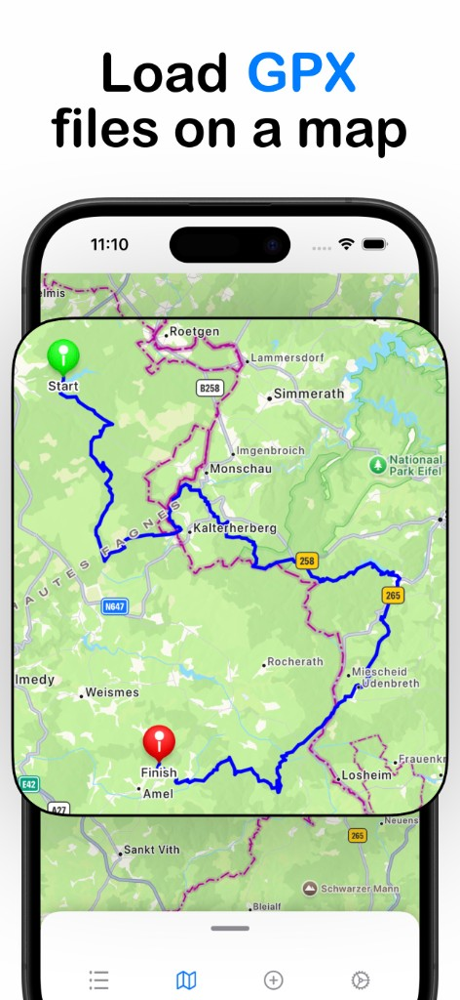
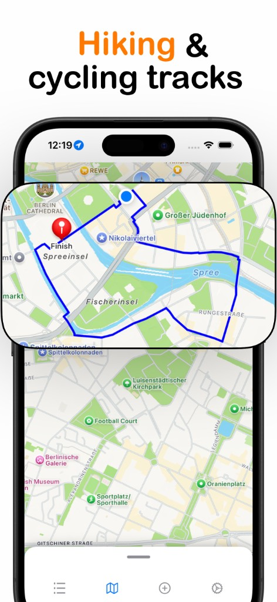
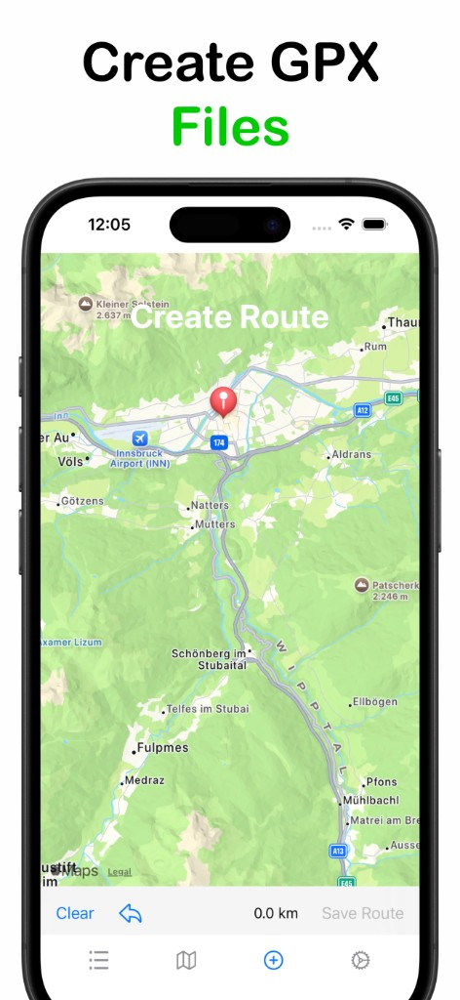
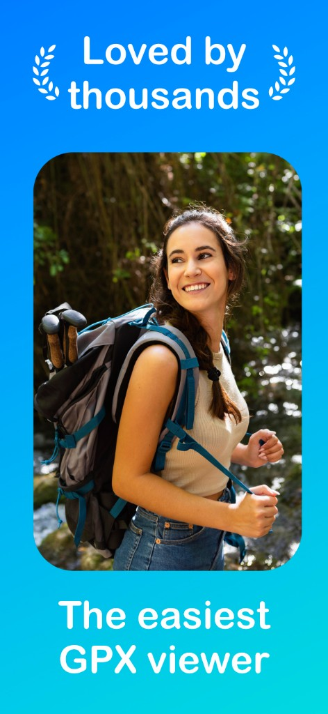

GPX-bestanden op een kaart bekijken
Open .gpx-bestanden en zie direct je route, waypoints en hoogtegegevens.
GPX Viewer
Open GPX-bestanden vanuit Bestanden, Mail of Safari. Volg paden en ritten met hoogteprofielen, live locatie en kaarten die net als in de app aanvoelen.
Laad routes op een kaart, volg wandel- en fietsroutes, maak je eigen GPX-bestanden en sluit je aan bij duizenden outdoorliefhebbers.




GPX Viewer houdt de kaartervaring eenvoudig: importeer een route, volg het spoor en focus op de tocht.
Open .gpx-bestanden en zie direct je route, waypoints en hoogtegegevens.
Zie je realtimepositie op de kaart met richtingsaanwijzer terwijl je een route volgt.
Plan eigen routes, sla ze op en exporteer GPX-bestanden om te delen of opnieuw te gebruiken.
Begrijp klimmen en afdalen voordat je vertrekt.
Schakel over naar fietsmodus voor ritten en fietsvriendelijke routeplanning.
Haal routes binnen uit andere apps en exporteer je tracks als GPX-bestanden.
Ontgrendel routecreatie, live locatie, kaarttypes, fietsmodus en meer met een eenmalige aankoop. Geen abonnement.
Eenmalige betaling · voor altijd van jou
GPX Viewer werkt met .gpx-bestanden — het standaardformaat voor GPS-routes en -tracks.
Nee. GPX Viewer Pro is een eenmalige aankoop. Eén keer kopen, voor altijd van jou.
Ja. Deel een GPX-bestand vanuit Bestanden, Mail, Safari en andere apps met GPX Viewer.
Neem contact op via lucas@streiv.app
Download GPX Viewer en open je eerste GPX-bestand in enkele seconden.